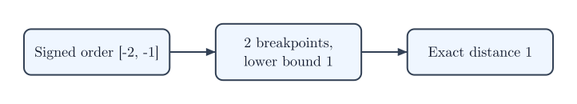
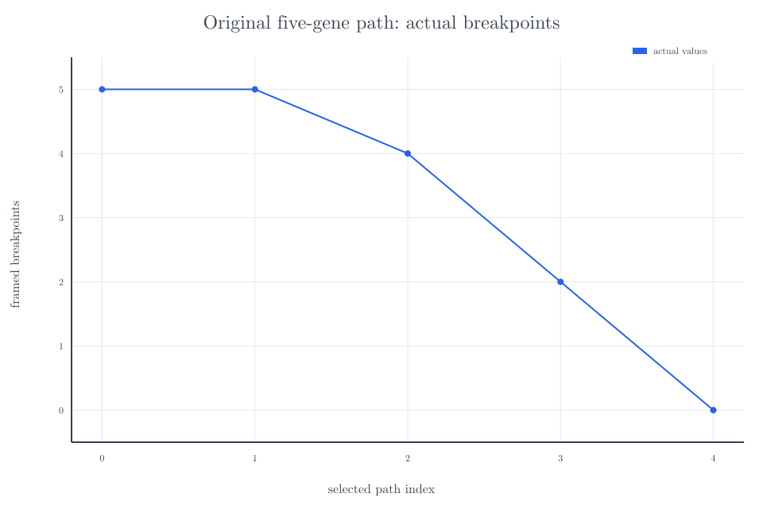
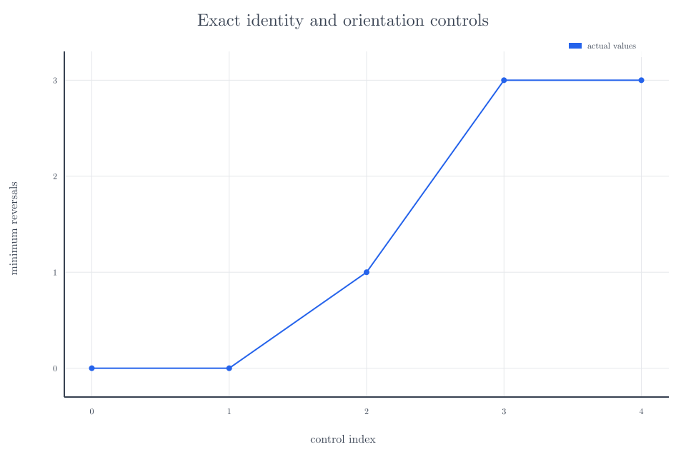
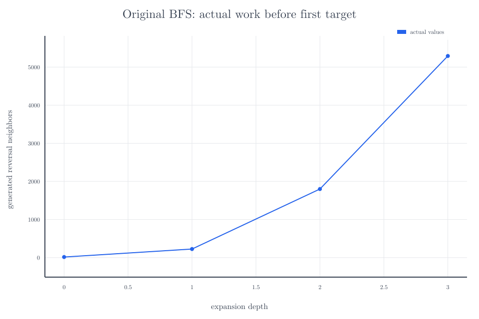

Signed reversals: exact small-permutation distance
Abstract
A signed gene order must be transformed into the positive identity by reversing intervals and negating their strands. Finding the fewest reversals is a shortest-path problem on signed permutations. We inspect actual BFS predecessors, retain the original five-gene example, and distinguish breakpoint bounds from exact distances.
Mechanism and mathematical scope
Every inclusive reversal is its own inverse and has unit cost. BFS explores states in nondecreasing reversal count; the first discovered identity therefore has minimum distance. The path records are the actual stored first-discovery predecessor chain.
Frame the permutation with0 and n+1 and count adjacent pairs (a,b) for which b is not a+1. Reversing and negating an internal adjacent pair preserves whether it is consecutive; only two boundary adjacencies change. Thus
The old raw-breakpoint lower-bound wording was false: (-2,-1) has two breakpoints but sorts in one reversal. There are 2^n times n factorial signed permutations. This pedagogical exhaustive BFS is exponential and is not the polynomial Hannenhalli-Pevzner method. Search limits throw without returning an unproved optimum.
A tiny actual producing history
The table and native concept diagram read the same producing execution. Every block below is a complete editable C++ program.
#include <dm/dm.hpp>
int main() {
namespace a = dm::algorithms;
namespace g = dm::graphics;
std::filesystem::create_directories("build");
auto r = a::signed_reversal_trace({-2, -1});
std::print("| path state | actual signed permutation | breakpoints | lower bound |\n| ---: | --- | ---: " "| ---: |\n");
for (std::size_t i = 0; i < r.path.size(); ++i) {
const auto &s = r.path[i];
std::print("| {} | `{}` | {} | {} |\n", i, s.permutation, s.breakpoints,
(s.breakpoints + 1) / 2);
}
g::Diagram concept_diagram(48, 1100);
concept_diagram.node("n0", {0, 0}, "Signed order [-2, -1]");
concept_diagram.node("n1", {5, 0},
std::format("{} breakpoints, lower bound 1",
r.path.front().breakpoints));
concept_diagram.node("n2", {10, 0},
std::format("Exact distance {}", r.result.distance));
concept_diagram.edge("n0", "n1").edge("n1", "n2");
concept_diagram.save_svg("build/signed_reversals_tiny.svg");
}| path state | actual signed permutation | breakpoints | lower bound |
|---|---|---|---|
| 0 | [-2, -1] | 2 | 1 |
| 1 | [1, 2] | 0 | 0 |

The retained original experiment
#include <dm/dm.hpp>
int main() {
namespace a = dm::algorithms;
namespace g = dm::graphics;
std::filesystem::create_directories("build");
auto r = a::signed_reversal_trace({3, 1, 2, -5, 4});
std::vector<double> x, y;
std::print("| actual path index | selected reversal | actual state | breakpoints |\n| ---: | --- | --- " "| ---: |\n");
for (std::size_t i = 0; i < r.path.size(); ++i) {
const auto &s = r.path[i];
std::print("| {} | [{},{}] | `{}` | {} |\n", i, s.reversal.first,
s.reversal.second, s.permutation, s.breakpoints);
x.push_back(i);
y.push_back(s.breakpoints);
}
std::print("\nExact distance {}; actual states {}; generated edges {}. Root reversal [-1,-1] is a " "marker.\n",
r.result.distance, r.states, r.generated);
auto plot = g::RPlot::create();
plot.lines(x, y, "actual values", {37, 99, 235}).points(x, y, {37, 99, 235},
4).title(
"Original five-gene path: actual breakpoints").x_label(
"selected path index").y_label("framed breakpoints");
plot.save_svg("build/signed_reversals_original.svg");
}| actual path index | selected reversal | actual state | breakpoints |
|---|---|---|---|
| 0 | [-1,-1] | [3, 1, 2, -5, 4] | 5 |
| 1 | [0,4] | [-4, 5, -2, -1, -3] | 5 |
| 2 | [0,0] | [4, 5, -2, -1, -3] | 4 |
| 3 | [0,3] | [1, 2, -5, -4, -3] | 2 |
| 4 | [2,4] | [1, 2, 3, 4, 5] | 0 |
Exact distance 4; actual states 2010; generated edges 7332. Root reversal [-1,-1] is a marker.

Explicit controls
#include <dm/dm.hpp>
int main() {
namespace a = dm::algorithms;
namespace g = dm::graphics;
std::filesystem::create_directories("build");
const std::vector<std::vector<int>> cases{{}, {1, 2, 3}, {-2, -1},
{-1, -2, -3}, {3, 1, 2}};
std::vector<double> x, y;
std::print("| control | state | exact distance | ceil(B/2) | visited states |\n| ---: | --- | ---: | " "---: | ---: |\n");
for (std::size_t i = 0; i < cases.size(); ++i) {
auto r = a::signed_reversal_run(cases[i]);
std::print("| {} | `{}` | {} | {} | {} |\n", i, cases[i],
r.result.distance, (a::signed_breakpoints(cases[i]) + 1) / 2,
r.states);
x.push_back(i);
y.push_back(r.result.distance);
}
auto plot = g::RPlot::create();
plot.lines(x, y, "actual values", {37, 99, 235}).points(x, y, {37, 99, 235},
4).title(
"Exact identity and orientation controls").x_label("control index").y_label("minimum reversals");
plot.save_svg("build/signed_reversals_controls.svg");
}| control | state | exact distance | ceil(B/2) | visited states |
|---|---|---|---|---|
| 0 | [] | 0 | 0 | 1 |
| 1 | [1, 2, 3] | 0 | 0 | 1 |
| 2 | [-2, -1] | 1 | 1 | 3 |
| 3 | [-1, -2, -3] | 3 | 2 | 32 |
| 4 | [3, 1, 2] | 3 | 2 | 29 |

Actual selected work and sensitivity
#include <dm/dm.hpp>
int main() {
namespace a = dm::algorithms;
namespace g = dm::graphics;
std::filesystem::create_directories("build");
auto r = a::signed_reversal_run({3, 1, 2, -5, 4});
std::vector<double> x, y;
std::print("| actual expansion depth | expanded | generated neighbors | newly discovered |\n| ---: | " "---: | ---: | ---: |\n");
for (const auto &s : r.layers) {
std::print("| {} | {} | {} | {} |\n", s.depth, s.expanded, s.generated,
s.discovered);
x.push_back(s.depth);
y.push_back(s.generated);
}
auto plot = g::RPlot::create();
plot.lines(x, y, "actual values", {37, 99, 235}).points(x, y, {37, 99, 235},
4).title(
"Original BFS: actual work before first target").x_label(
"expansion depth").y_label("generated reversal neighbors");
plot.save_svg("build/signed_reversals_work.svg");
}| actual expansion depth | expanded | generated neighbors | newly discovered |
|---|---|---|---|
| 0 | 1 | 15 | 15 |
| 1 | 15 | 225 | 120 |
| 2 | 120 | 1800 | 700 |
| 3 | 353 | 5292 | 1174 |

API and interpretation
Genes must be a complete signed permutation of1..n; zero, duplicates, INT_MIN and missing/out-of-range genes are rejected. Defaults cap genes at8, visited states at one million and generated neighbors at20million. Identity needs one visited root and zero reversals. Toy gene orders illustrate the combinatorics; they do not estimate evolution from biological observations.
Reusable producers, fixtures and histories live in the canonical C++ library. Captured records own their values and do not come from a separate report replay. Selected counters and record/scalar policies are specified at their API boundaries; they are not peak-byte or wall-time budgets. Synthetic structural inputs are controlled fixtures for these mechanisms.
References
Verified in the shared ten-document batch: 48 scoped native cases;20 directly
instrumented ASan/UBSan cases;77 executable public examples;252/252 full-file
definitions across21 scopes;10 hovers;1843 independent records/11127
checks;frozen comparisons across all ten families with translation-cancellation
and strict-parser corrections recorded;11 checkout/installed standalone headers
and linked ten-family consumer;40 executed programs and40 inspected figures with
both exports. Receipts: build/mepml-conversion/batch-354-363/.